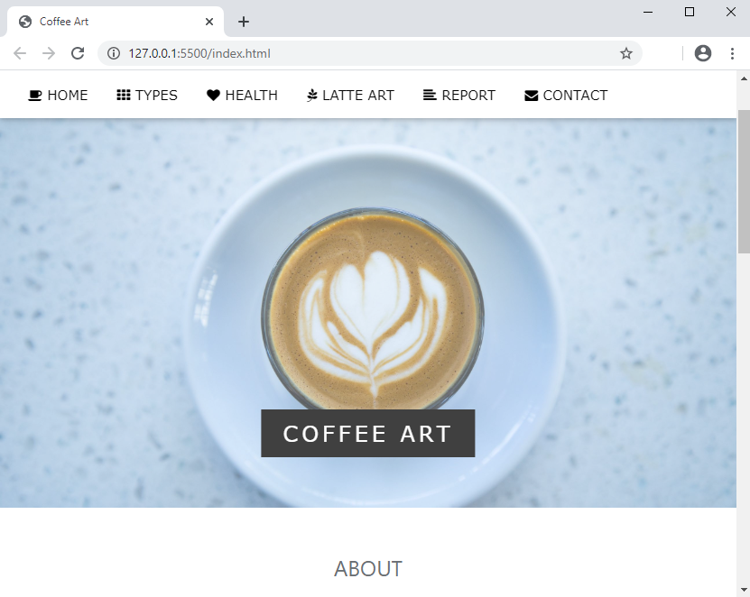
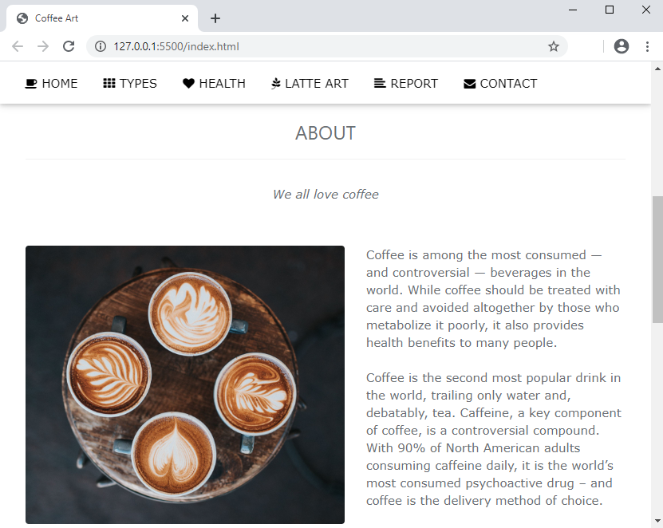
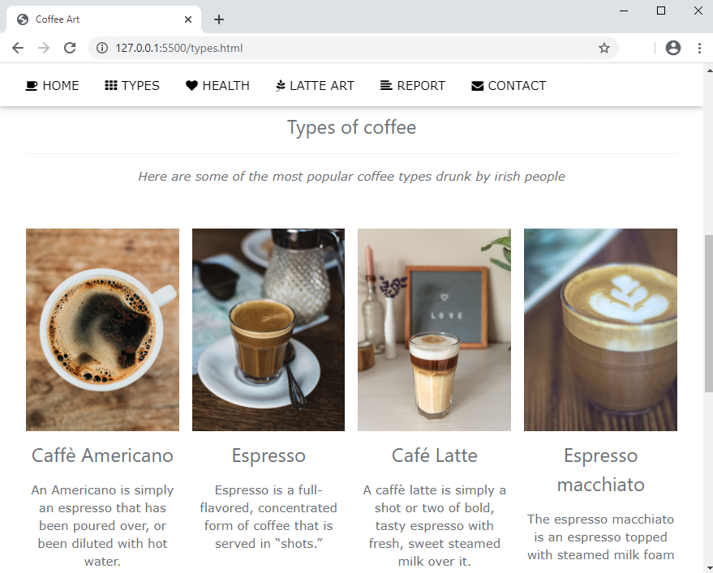
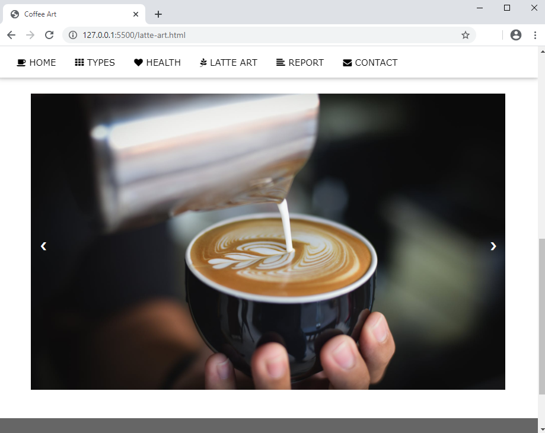

Web Development Project
As a part of Web Development module I designed a website about my hobby - making coffees.
The main technologies that were used in development of this website are:
-
HTML for pages markup
-
CSS - specificaly W3CSS for styling
Front page
Parallax scrolling on front page makes a nice transition from visual to text content.
About page
This page includes some basic information about coffee and how much it is popular in the world right now
Types of Coffee
While working in the local restaurant I spent a lot of time making coffees for our guests. According to my experience I made a list of the most popular coffees among locals and included it in my website.
Latte Art Gallery
Latte Art is a form of drawing images on coffee with the help of frothed milk and crema. I am trying to develop this skill over 1 year now and it is not an easy task to do. On gallery page I put examples of some beautiful latte art pieces
